Ce este sănătatea publică?
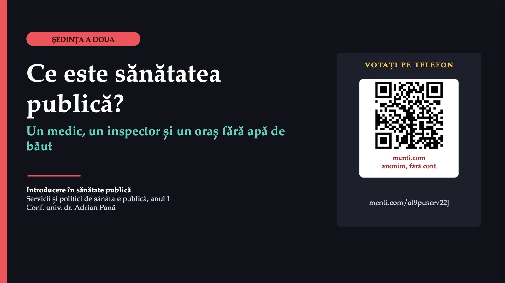
1 / 45Titlul de azi este o întrebare: ce este sănătatea publică? Primim un răspuns scurt chiar de la început, iar restul ședinței îl desface pe un caz. Deschideți de pe acum Mentimeter pe telefon.
Ce am schimbat după răspunsurile voastre
![DUPĂ PRIMA SĂPTĂMÂNĂ Ce am schimbat după răspunsurile voastre Primul curs și primul seminar nu au ajuns la biletul de ieșire; modificările pornesc de la voturile voastre din sală. Cursul se încheie mai devreme, cu biletul de ieșire cu zece minute înainte de sfârșitul orelor (la fel la seminar), și are mai puține activități. Cursul 2 începe cu două răspunsuri din voturi: „trăim mai mult datorită spitalelor” (majoritatea ați răspuns „adevărat”) și raportul deceselor din studiul lui Snow (mulți dintre voi ați ales „peste cincizeci de ori”).](diapozitive/C02/002.jpg) 2 / 45
2 / 45Prima ședință de curs și primul seminar nu au ajuns la biletul de ieșire. Timpul s-a terminat înainte de ultimele activități. Am citit, în schimb, voturile voastre din sală și am schimbat două lucruri.
O oră și cincizeci de minute, șase părți
 3 / 45
3 / 45Azi sunt mai puține activități, iar ultimele cinci minute sunt rezervate biletului de ieșire. Biletul are trei întrebări și este anonim. Fără el nu putem ști ce merge și ce nu.
Sănătatea publică este efortul organizat al societății de a proteja și de a promova sănătatea întregii populații.
![UN RĂSPUNS SCURT LA TITLU Sănătatea publică este efortul organizat al societății de a proteja și de a promova sănătatea întregii populații. Legea nr. 95/2006 și Organizația Mondială a Sănătății spun aproape același lucru. Organizat Instituții, reguli și bani publici, nu fapta bună a unui singur om. Societate Lucrează împreună mai mulți actori, nu numai medicii. Populație Ținta este toată lumea, inclusiv oamenii care azi sunt sănătoși. Sursa: Legea nr. 95/2006, titlul I; OMS, glosarul de promovare a sănătății, 2021](diapozitive/C02/004.jpg) 4 / 45
4 / 45Iată răspunsul, în forma cea mai scurtă. Trei cuvinte din această definiție contează mai mult decât celelalte. Restul cursului de azi le desface pe rând.
Majoritatea
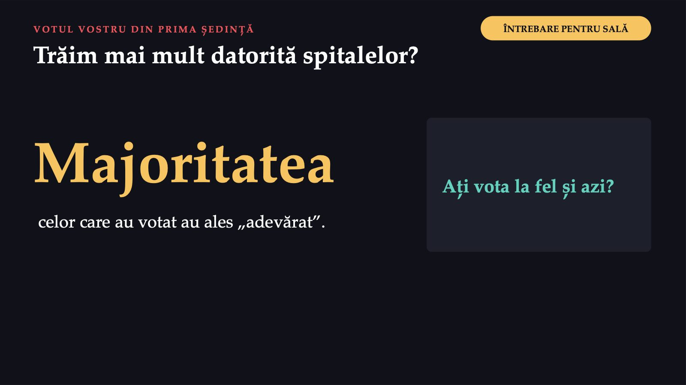
5 / 45În prima ședință, majoritatea celor care au votat au ales „adevărat”. Înainte să vedem ce spun datele: și-ar schimba cineva votul azi?
Parțial adevărat
![CE SPUN DATELE Parțial adevărat Statele Unite, 1900–1999: speranța de viață a crescut cu peste 30 de ani. circa 25 de ani: progresele sănătății publice restul Estimarea CDC din 1999. Direcția ei este confirmată de OMS în 2026: marile câștiguri de la începutul secolului XX au venit în mare parte din vaccinare, apă, canalizare și igienă. Spitalele contează. Scăderea mortalității prin infarct și prin accident vascular cerebral este o realizare comună a medicinei clinice și a sănătății publice. Sursa: CDC, Ten Great Public Health Achievements, 1999; OMS, 2026](diapozitive/C02/006.jpg) 6 / 45
6 / 45Cei mai mulți ani câștigați într-un secol au venit din lucruri care se petrec înainte ca omul să ajungă la spital. Asta nu înseamnă că spitalele nu contează.
„peste cincizeci de ori”
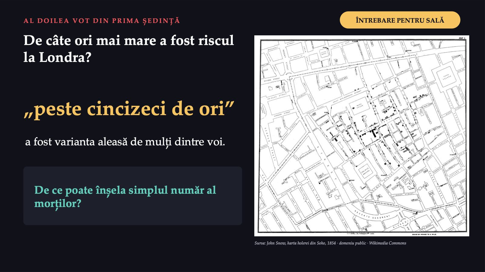
7 / 45Al doilea vot privea studiul lui John Snow din vara anului 1854. Mulți dintre voi ați ales varianta cea mai mare. Înainte de cifre: de ce poate înșela simplul număr al morților?
≈ 8×
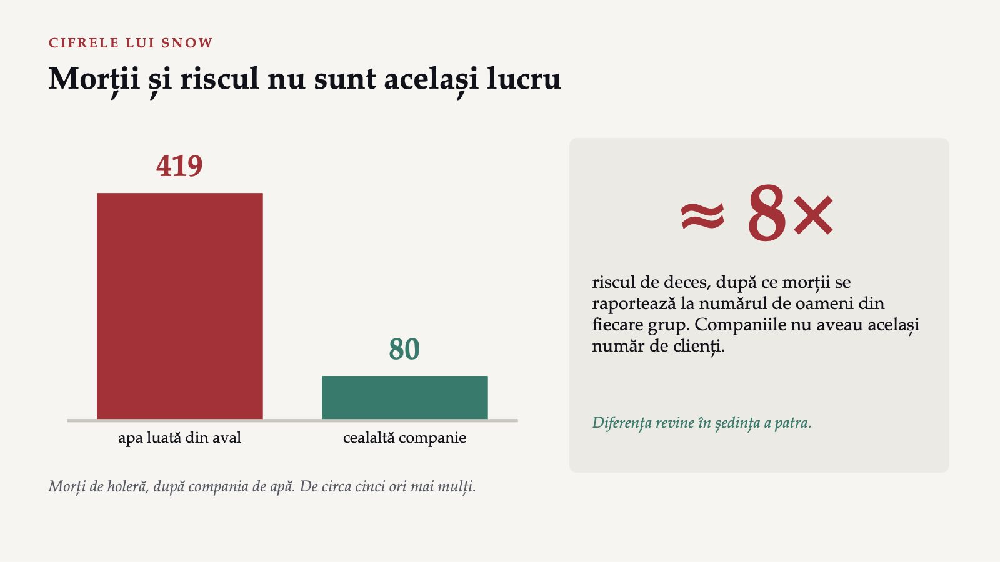
8 / 45O comparație cinstită pune fiecare număr de bolnavi lângă numărul de oameni din care provine. Diferența dintre cele două cifre revine în ședința a patra, la biostatistică.
Doi pacienți în aceeași zi
![SITUAȚIE CONSTRUITĂ PENTRU CURS Doi pacienți în aceeași zi Spitalul județean, luni dimineață Un medic pneumolog îi explică unui bărbat de cincizeci și opt de ani rezultatul biopsiei: cancer pulmonar. Bărbatul fumează de la șaisprezece ani. Medicul îi propune tratamentul, controalele și un program de renunțare la fumat. La câțiva kilometri, în aceeași dimineață Un inspector împuternicit de Ministerul Sănătății pregătește controalele din barurile și restaurantele județului: se respectă interdicția fumatului în spațiile publice închise? Nu va vedea niciun bolnav toată săptămâna. Amândoi lucrează pentru sănătate. Doar unul are în față un pacient pe care îl poate numi.](diapozitive/C02/009.jpg) 9 / 45
9 / 45Situația este construită pentru acest curs și nu descrie persoane reale. Amândoi lucrează pentru sănătate. Doar unul dintre ei are în față un pacient pe care îl poate numi.
Cine va avea, în zece ani, un efect mai mare asupra numărului de cazuri de cancer pulmonar din județ?
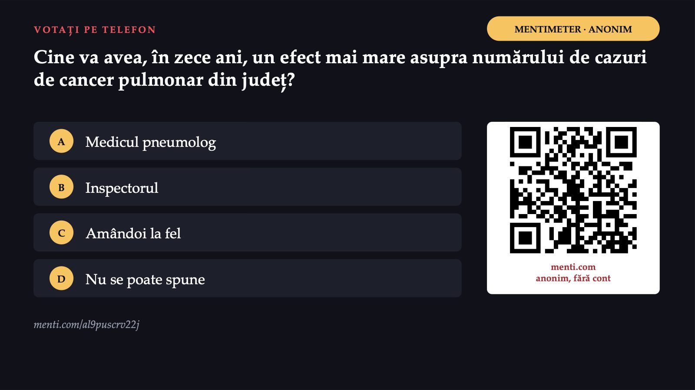
10 / 45Un singur vot, anonim. Gândiți-vă la toți fumătorii din județ, nu numai la bărbatul din cabinet.
Cine este „pacientul” inspectorului?
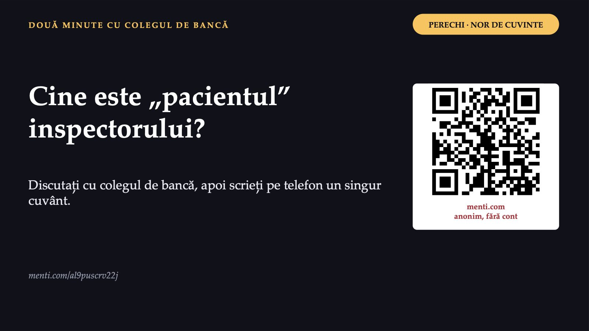
11 / 45Discutați cu colegul de bancă și scrieți un singur cuvânt. Câteva dintre cuvinte le citim împreună.
Răspunsul apare după ședință
Răspunsul apare după ședință
Un secol, aceeași idee
![DEFINIȚIILE Un secol, aceeași idee 1920 Winslow Știința și arta de a preveni boala, de a prelungi viața și de a promova sănătatea, prin eforturile organizate ale comunității. 1998 OMS preia formula Acheson (1988) Aceeași idee, prin eforturile organizate ale societății. 2021 Glosarul OMS Promovare, protecție, îmbunătățire și, când e nevoie, refacerea sănătății. 2024 OMS, privind înapoi Definiția largă a lăsat practica să evolueze; lipsa limitelor clare a îngreunat aplicarea ei completă. Winslow marchează momentul în care sănătatea publică încetează să fie doar interdicție și devine și prevenție.](diapozitive/C02/013.jpg) 13 / 45
13 / 45Definițiile s-au schimbat puțin în ultimul secol, iar asta spune ceva despre stabilitatea ideii. Winslow a opus concepția lui exercitării puterii de poliție, principala formă a sănătății publice de până atunci.
Legea nr. 95/2006 urmează aceeași linie
![LEGEA ROMÂNĂ Legea nr. 95/2006 urmează aceeași linie LEGEA NR. 95/2006 · TITLUL I · PE SCURT Asistența de sănătate publică: efortul organizat al societății pentru protejarea și promovarea sănătății populației. Se face prin măsuri politice și legislative, programe și strategii pentru determinanții sănătății și instituții care furnizează serviciile. Scopul: promovarea sănătății, prevenirea îmbolnăvirilor, o viață mai bună. Trei idei se repetă în toate definițiile: A prevenția înaintea tratamentului B populația înaintea individului C efortul organizat, nu gestul izolat](diapozitive/C02/014.jpg) 14 / 45
14 / 45Legea română urmează aceeași linie. Aceeași lege definește sănătatea publică drept starea de sănătate a populației în raport cu determinanții ei: socioeconomici, biologici, de mediu, de stil de viață și de acces la servicii.
Clinica și sănătatea publică, față în față
![ÎNTREBARE PENTRU SALĂ COMPLETAȚI ÎMPREUNĂ Clinica și sănătatea publică, față în față Întrebarea · Medicina clinică · Sănătatea publică Cine este pacientul? · persoana din cabinet · comunitatea, inclusiv cei sănătoși Când intervine? · de obicei, după apariția bolii · de preferință, înainte de apariția bolii Cu ce lucrează? · diagnostic, tratament, recuperare · date, reguli, programe, informare Cum vede rezultatul? · pacientul s-a vindecat sau nu · ? Cine plătește și cine decide? · pacientul, asigurarea, medicul · autoritățile publice, prin lege și buget](diapozitive/C02/015.jpg) 15 / 45
15 / 45Tabelul pune cei doi pacienți din caz unul lângă altul. Un rând a rămas necompletat: cum își vede sănătatea publică rezultatul?
Succesul este o absență.
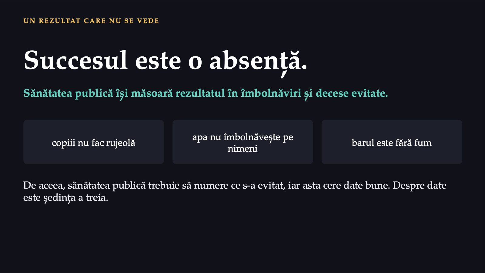
16 / 45Când o măsură de sănătate publică reușește, nu se vede nimic. Cum numărăm ce nu s-a întâmplat? Cu această întrebare începe ședința a treia.
„Sănătatea publică înseamnă spitalele de stat și medicii plătiți de stat.”
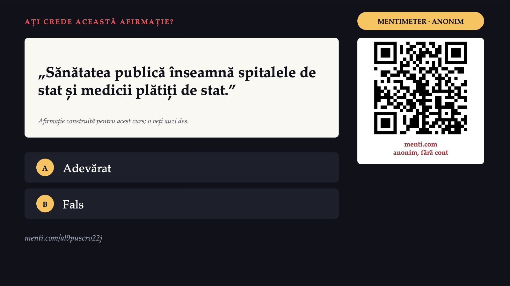
17 / 45Afirmația este construită pentru acest curs, dar o veți auzi des. Adevărat sau fals?
Răspunsul apare după ședință
Răspunsul apare după ședință
Cine acționează și pe ce lege se sprijină?
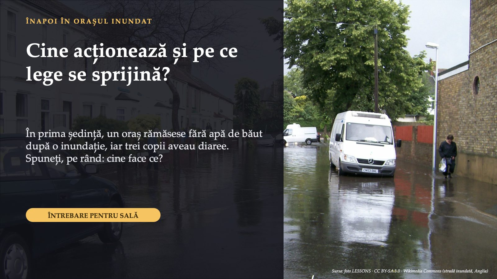
19 / 45Vă promiteam în prima ședință un răspuns mai precis: cine anume acționează și pe ce lege se sprijină.
Fiecare rol are o lege și o funcție cu nume
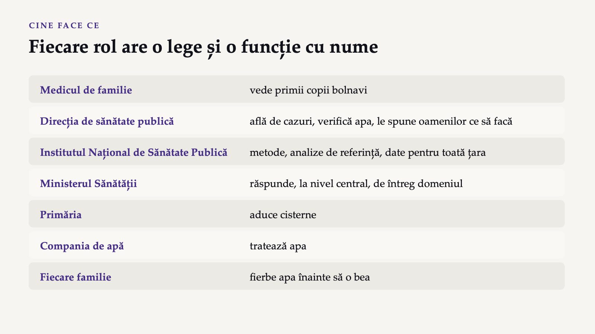
20 / 45Nimic din această listă nu este nou pentru voi. Nou este doar faptul că pentru fiecare rol există un text de lege și o funcție cu nume.
Evaluează, construiește politici, asigură
![TREI FUNCȚII DE BAZĂ · INSTITUTUL DE MEDICINĂ, 1988 Evaluează, construiește politici, asigură Evaluează strânge și citește datele despre sănătatea comunității Câți copii au diaree, pe ce străzi, de când? Construiește politici propune reguli și programe pe baza datelor Apa de la robinet nu se bea până la noi analize. Asigură garantează că serviciile ajung la oameni Apa îmbuteliată ajunge la oameni; analizele se repetă. Din ele s-au dezvoltat, în 1994, cele zece servicii esențiale, revizuite în 2020, cu echitatea în centru.](diapozitive/C02/021.jpg) 21 / 45
21 / 45Același raport din 1988 a scris misiunea sănătății publice într-o frază: să asigure condițiile în care oamenii pot fi sănătoși.
12
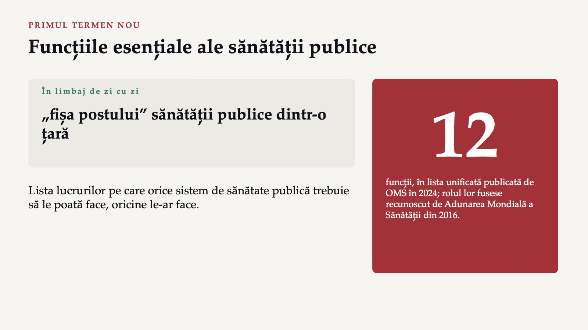
22 / 45Primul termen nou al zilei. Gândiți-vă la el ca la o fișă a postului: nu spune cine face lucrurile, ci ce trebuie să fie făcut.
Douăsprezece funcții, două grupe
![OMS, 2024 ȘI 2026 Douăsprezece funcții, două grupe supravegherea și monitorizarea gestionarea urgențelor conducerea: instituții, reguli, răspunderi planificarea și finanțarea, cu alte sectoare protecția sănătății prevenția și depistarea timpurie promovarea sănătății implicarea comunității formarea oamenilor calitatea și echitatea serviciilor cercetarea și evaluarea accesul la medicamente și tehnologii orientate spre servicii funcții de sprijin supravegherea: la baza ambelor grupe Lista nu se învață pe de rost. Arată cât de larg este domeniul.](diapozitive/C02/023.jpg) 23 / 45
23 / 45Ghidul Organizației Mondiale a Sănătății din 2026 păstrează aceleași douăsprezece funcții și le împarte în două grupe. O funcție se poate întinde mult dincolo de medicină: urmărirea rezistenței microbilor la antibiotice cuprinde și sectorul veterinar, agricultura și mediul.
Ministerul, direcțiile, institutul
![CINE ÎNDEPLINEȘTE FUNCȚIILE ÎN ROMÂNIA Ministerul, direcțiile, institutul Ministerul Sănătății autoritatea centrală Direcțiile de sănătate publică în fiecare județ și în București; aplică, în județ, politica ministerului Institutul Național de Sănătate Publică în subordinea ministerului; îndrumă tehnic rețeaua, supraveghează starea de sănătate, ține sistemul informațional „Direcțiile de sănătate publică județene și a municipiului București sunt servicii publice deconcentrate ale Ministerului Sănătății, cu personalitate juridică.” (Legea nr. 95/2006)](diapozitive/C02/024.jpg) 24 / 45
24 / 45Răspunderea pentru asistența de sănătate publică o au, alături de minister, și Casa Națională de Asigurări de Sănătate, ministerele cu rețea sanitară proprie și autoritățile locale. Direcția din orașul inundat este cea care află de cazuri și organizează răspunsul local.
Supravegherea: scopul este decizia
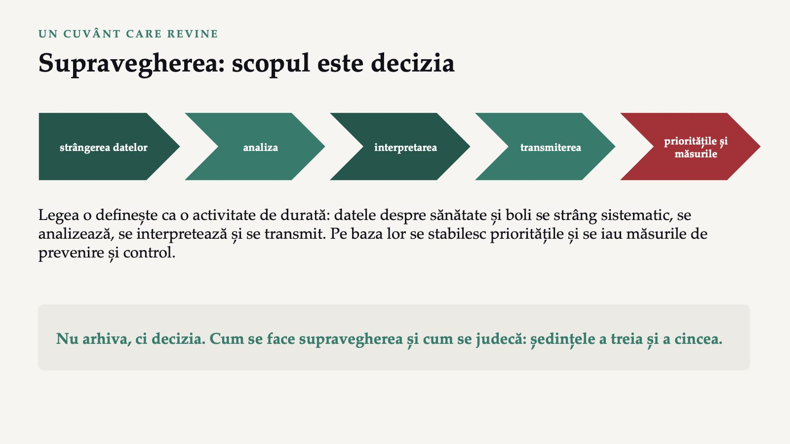
25 / 45Legea enumeră și funcțiile principale ale asistenței de sănătate publică: printre ele, supravegherea epidemiologică, prevenirea și controlul bolilor, protejarea populației împotriva riscurilor din mediu și informarea pentru promovarea sănătății. Supravegherea revine în aproape fiecare curs al semestrului.
Cine face ce în orașul inundat?
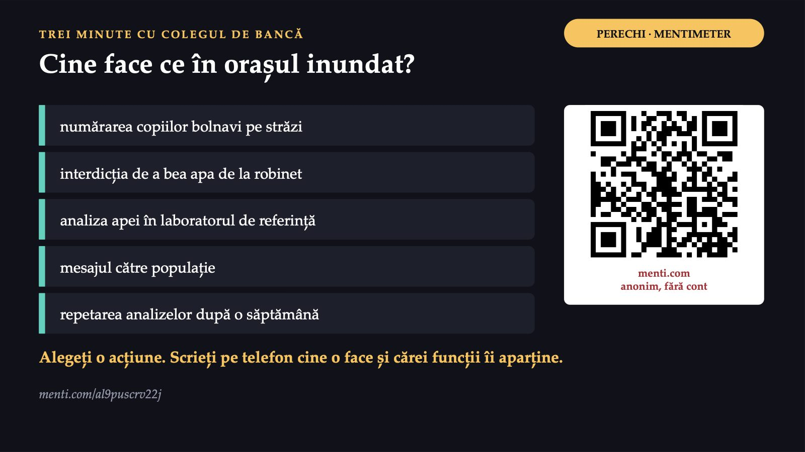
26 / 45Trei minute cu colegul de bancă. Răspunsurile apar pe ecran, grupate.
Funcțiile nu sunt sertare separate
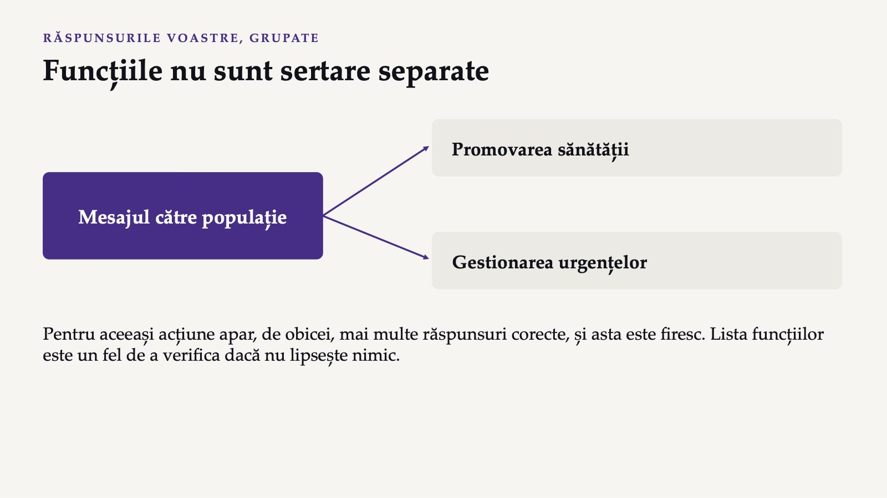
27 / 45Mesajul către populație ține de promovarea sănătății, dar și de gestionarea urgenței. Funcțiile nu sunt sertare separate.
Înainte, devreme, după
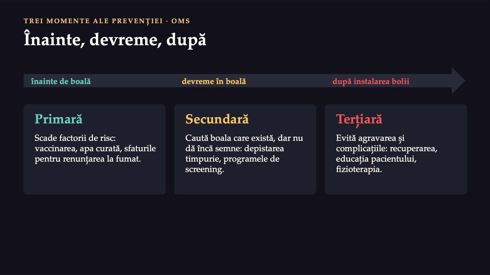
28 / 45Prevenția nu înseamnă doar „înainte de boală”. Organizația Mondială a Sănătății distinge trei momente. Prevenția primară poate cuprinde și acțiuni asupra condițiilor de mediu, economice și sociale care cresc riscul.
În ce moment al prevenției?
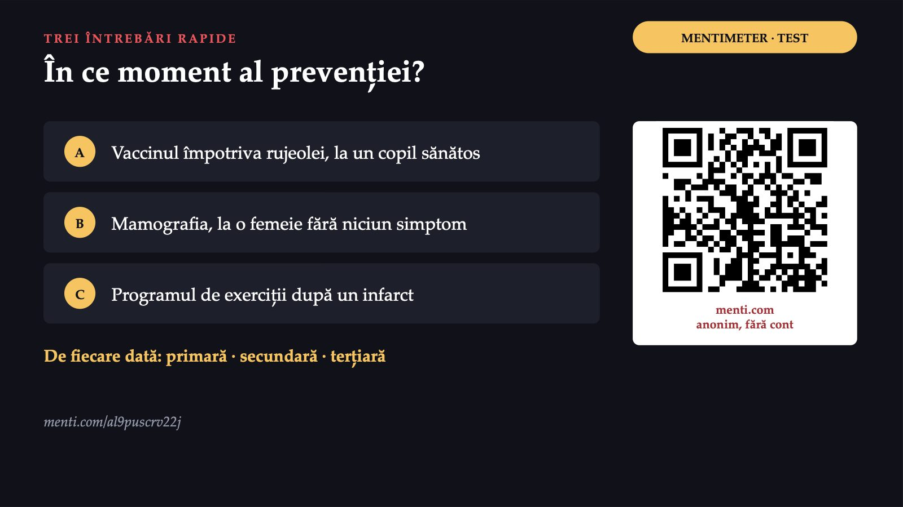
29 / 45Trei întrebări rapide, fiecare cu aceleași trei variante: primară, secundară, terțiară.
Răspunsul apare după ședință
Răspunsul apare după ședință
1980
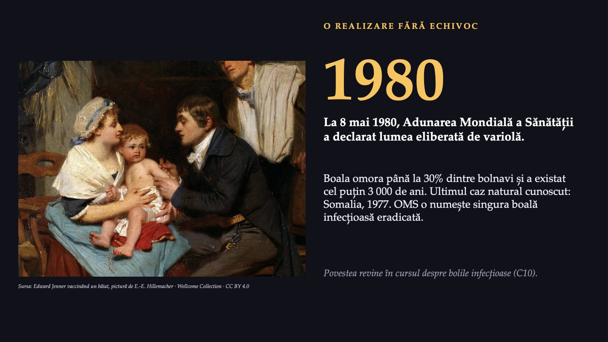
31 / 45Realizările sănătății publice se pot citi greșit. Iată două exemple: unul fără echivoc și unul care cere prudență.
690
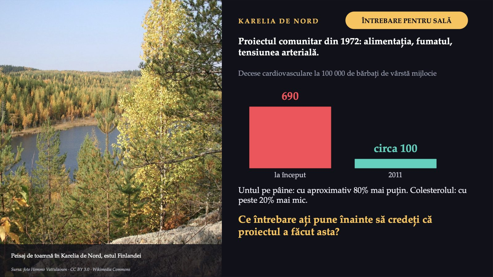
32 / 45În anii 1960, bărbații finlandezi aveau cea mai mare mortalitate prin boli de inimă din lume. Colesterolul a scăzut mai ales prin schimbarea alimentației, nu prin medicamente. Ce ați vrea să știți înainte să credeți cifrele?
Răspunsul apare după ședință
Răspunsul apare după ședință
Promovarea sănătății
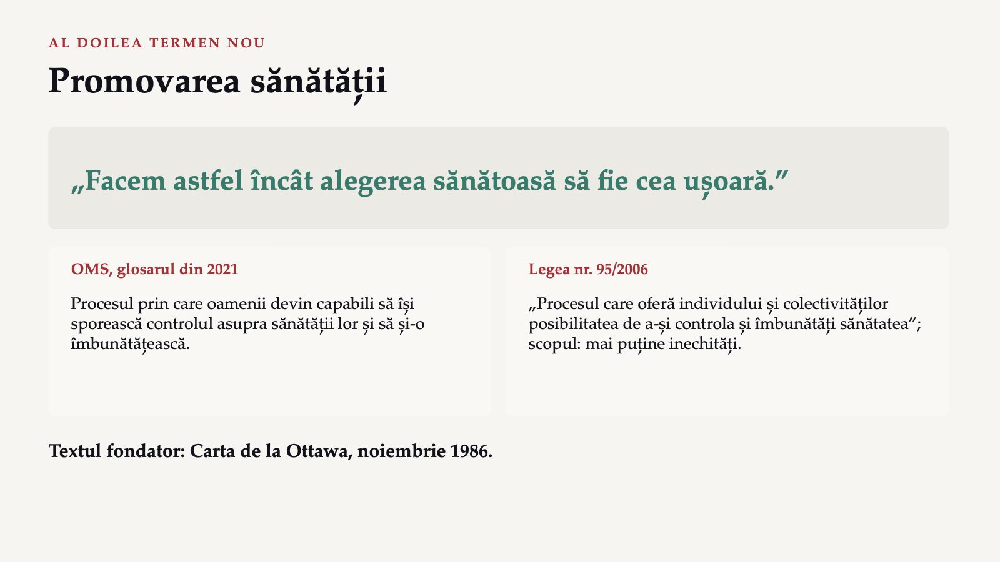
34 / 45Al doilea termen nou. Nu doar „vă spunem ce să faceți”. Carta de la Ottawa are aproape patruzeci de ani; o citim pentru istorie și pentru că vocabularul ei se folosește și azi.
Afișul sau taxa?
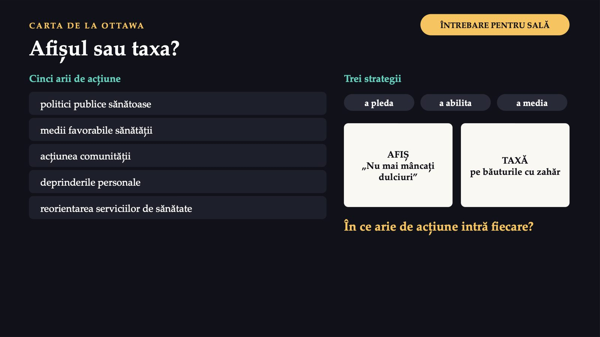
35 / 45Carta a numit cinci arii de acțiune și trei feluri de a lucra: a susține public condițiile care favorizează sănătatea, a le da oamenilor mijloacele și a împăca interesele diferite din societate. Observați ordinea: deprinderile personale sunt doar una din cinci arii.
Taxa pe băuturile cu zahăr
![UN EXEMPLU REAL · MEXIC Taxa pe băuturile cu zahăr Cumpărăturile de băuturi taxate, față de tendința din 2012–2013 2014 5,5% mai puțin 2015 9,7% mai puțin Gospodării din 53 de orașe. Scăderile cele mai mari: în grupul socioeconomic cel mai de jos. Ce măsoară studiul Cumpărături. O politică publică schimbă cumpărăturile unei țări întregi fără ca cineva să fie convins individual. Ce nu măsoară Kilograme sau boli. Dacă taxa a redus obezitatea este o altă întrebare, cu alte date. Taxa ține de politicile publice. Taxele de sănătate revin în ședința a șasea.](diapozitive/C02/036.jpg) 36 / 45
36 / 45Cercetătorii au comparat cumpărăturile reale cu cele de așteptat dacă tendința dinaintea taxei ar fi continuat. Studiul măsoară cumpărături, nu kilograme și nici boli.
Echitatea: diferențele care se pot evita
![PENTRU CINE? Echitatea: diferențele care se pot evita OMS: absența diferențelor nedrepte, evitabile sau remediabile de sănătate între grupuri. O diferență: bătrânii sunt mai bolnavi decât tinerii. O nedreptate: doi oameni de aceeași vârstă trăiesc ani diferiți doar pentru că s-au născut în județe diferite. Sănătatea în toate politicile Declarația de la Helsinki, 2013: politicile din toate sectoarele țin cont de consecințele lor asupra sănătății, caută sinergii și evită efectele nocive. Un drum nou, un program școlar, o regulă de urbanism: toate sunt decizii de sănătate. De unde vin diferențele și cum se măsoară: ședința a șaptea.](diapozitive/C02/037.jpg) 37 / 45
37 / 45Cuvântul care contează este „evitabile”. Consiliul Uniunii Europene a adoptat concluzii despre sănătatea în toate politicile în 2006. Deciziile de sănătate nu le ia numai ministerul sănătății.
Puterea de a impune cere reguli
 38 / 45
38 / 45Organizația Mondială a Sănătății a scris aceste reguli pentru o întrebare grea a pandemiei: când este justificată vaccinarea obligatorie împotriva COVID-19?
Proporționalitatea
 39 / 45
39 / 45Al treilea termen nou. Decidenții au datoria să spună de ce au ales o obligație și trebuie să cântărească efectul asupra încrederii oamenilor.
Focar de rujeolă la grădiniță
![Copil cu erupția tipică de rujeolă Sursa: foto CDC/NIP/Barbara Rice · domeniu public · CDC PHIL DOUĂ TABERE · SITUAȚIE CONSTRUITĂ PENTRU CURS Focar de rujeolă la grădiniță O parte dintre copiii unei grădinițe nu sunt vaccinați. STÂNGA „Copiii nevaccinați nu mai intră în grădiniță până trece focarul.” DREAPTA „Mai întâi informare, vaccinare gratuită la grădiniță și discuții cu părinții.” Pregătiți un singur argument; apoi câte un minut pe tabără. La final, votul: ce măsură este mai proporțională? menti.com anonim, fără cont](diapozitive/C02/040.jpg) 40 / 45
40 / 45Situația este construită pentru acest curs. Tabăra din stânga susține excluderea temporară a copiilor nevaccinați; tabăra din dreapta, informarea și vaccinarea gratuită. Variantele votului: măsura din stânga, măsura din dreapta sau „depinde de cât de repede se răspândește focarul”.
Răspunsul apare după ședință
Răspunsul apare după ședință
Comunicarea riscului: un schimb, nu un comunicat
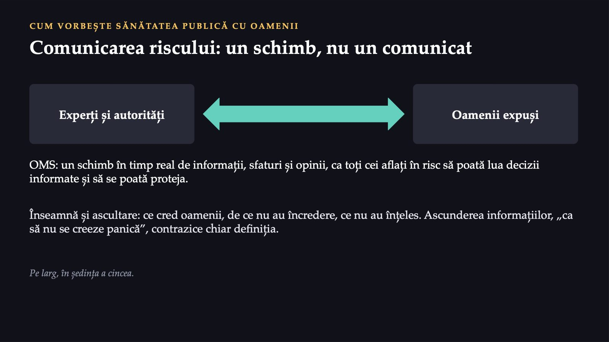
42 / 45În orașul inundat, mesajul către populație era una dintre cele cinci acțiuni. El are un nume: comunicarea riscului.
Ce nu putem afirma
![CIFRE DIN DECUL VECHI, SCOASE DIN CURS Ce nu putem afirma Că proiectul Karelia de Nord a redus „cu 80%” mortalitatea prin el însuși: aceeași scădere s-a văzut în toată Finlanda. Că taxa din Mexic a scăzut obezitatea cu 5,5%: cifra privește cumpărăturile de băuturi taxate. Scăderile atribuite unor programe străine pentru cancerul de sân, sănătatea mintală a tinerilor sau malarie. Efectele unor programe românești pentru care nu am găsit o evaluare publicată. Ultimul caz de poliomielită din România și epidemia recentă de rujeolă: le verificăm pentru cursul despre bolile infecțioase.](diapozitive/C02/043.jpg) 43 / 45
43 / 45Decul vechi al cursului conține câteva cifre și programe care nu au putut fi confirmate în sursele consultate pentru aceste note. De aceea nu apar în curs.
Luni dimineață, în fața unei „măsuri de sănătate”
![ALEGEȚI O ÎNTREBARE CE FACEȚI DIFERIT DE MÂINE Luni dimineață, în fața unei „măsuri de sănătate” Sănătatea publică este un fel de a lucra: organizat, pentru o populație întreagă, de preferință înainte de boală. A Este o măsură pentru un om sau pentru o populație? B Ține de deprinderile personale sau schimbă mediul în care alegem? C Este proporțională cu problema și cine a explicat de ce? Ședința a treia: dacă succesul este o absență, cum îl numărăm? Despre date: de unde vin, cine le strânge, cât ne putem baza pe ele.](diapozitive/C02/044.jpg) 44 / 45
44 / 45Alegeți una dintre cele trei întrebări și aplicați-o unei știri pe care ați citit-o săptămâna aceasta. Dacă știrea vine de la o direcție de sănătate publică, ați aflat și cine o semnează și pe ce lege se sprijină.
Trei întrebări pentru final
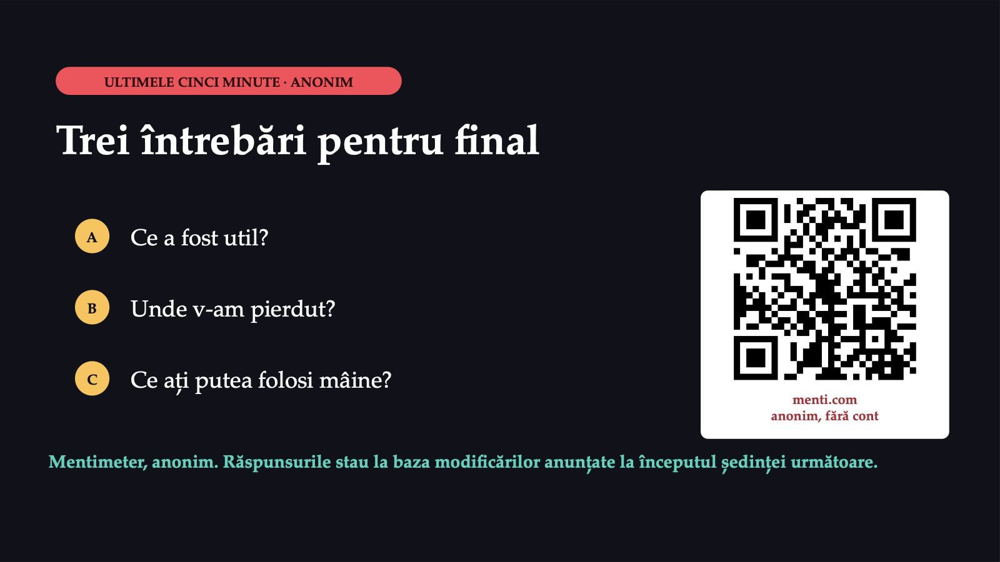
45 / 45Trei întrebări, anonim, pe Mentimeter, prin codul QR. Răspunsurile stau la baza modificărilor anunțate la începutul ședinței următoare.
Săgeți sau spațiu: navigare · O: vedere de ansamblu · N: notele prezentatorului · F: ecran complet · Esc: închidere